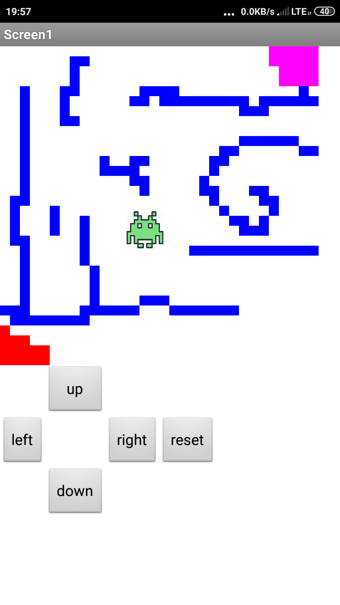

<!doctype html>
	<html lang="en">
	    <!DOCTYPE html>
<html>
<body style="background-color:#D1C1FF;">
</body>
</html>
	  <head>
	    <meta charset="utf-8">
	    <title>Portfolio</title>
	  </head>
	  <body>
    <a href="index.html">Home</a>
    <a href="portfolio.html">Portfolio</a>
     <a href="aboutme.html">About Me</a>
    <h1>Welcome to Ashley's Portfolio Page!</h1>
    
    <br>
    <a target="_blank" href="https://scratch.mit.edu">
      
    </a>
	  </body>
	</html>
	<p></p>
	<h1>Potatoes in Space Game!</h1>
	<p1>Here's a little scratch game I made! Press the green flag to start and restart. For the first level, use your mouse to guide the potato(it will glide to wherever your mouse is). Hope you have fun! </p1>
	<p></p>
	 <iframe allowtransparency="true" width="485" height="402" src="//scratch.mit.edu/projects/embed/286063799/?autostart=false" frameborder="0" allowfullscreen></iframe>
	 <p></p>
	<p2>This is a game I made using MIT App Inventor. It is a maze game where you use arrow controls to move the alien, but don't run into the walls because that will set you back to the beginning. Once you make it to designated color area, you can move to the next level. Once you complete all the levels, you will recieve a congratulatory message. To reply, press the built in back button of the device. </p2>
	<p></p>
	 
	 
